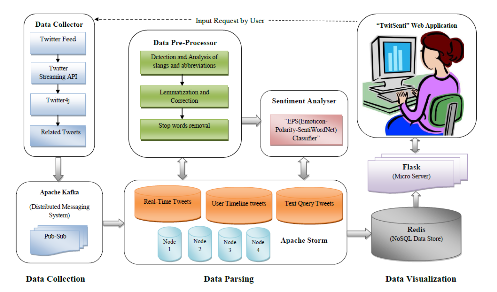
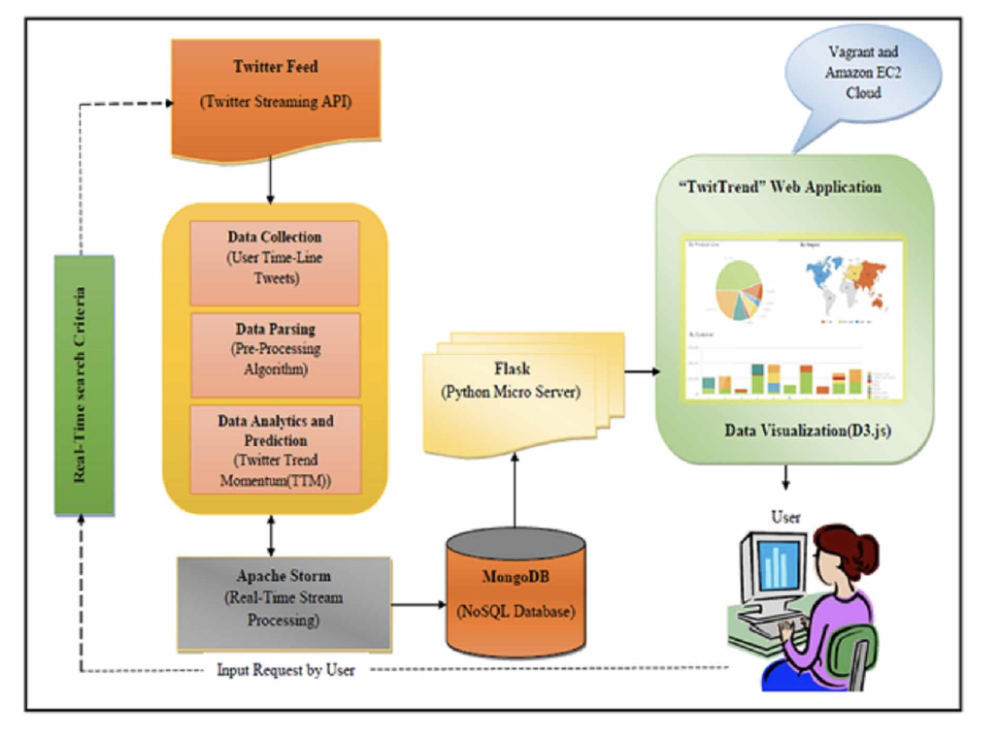
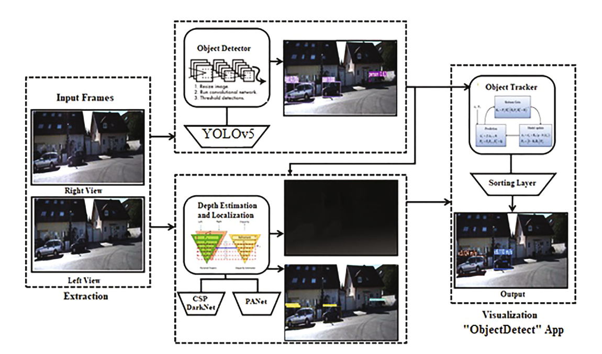
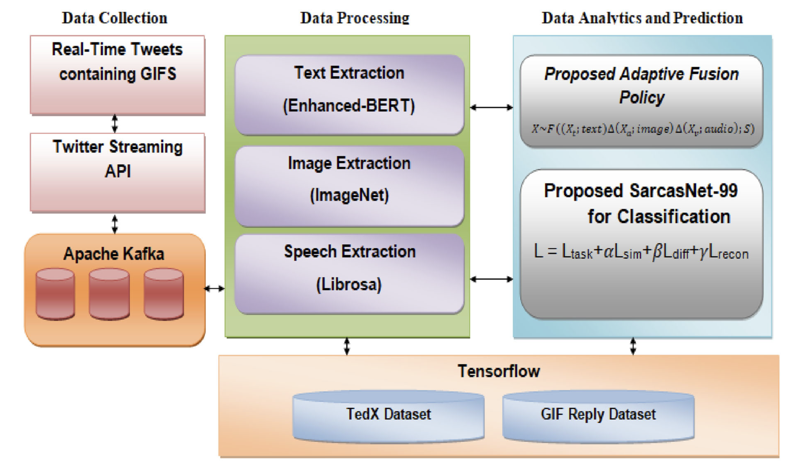
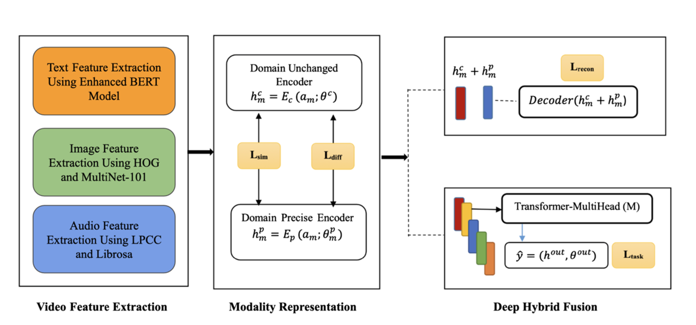
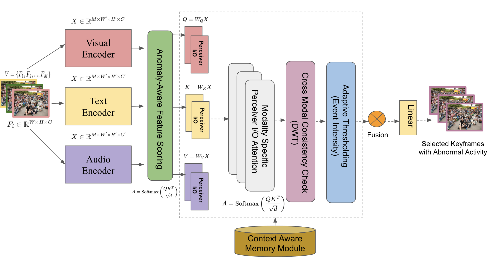

|
Jamuna S Murthy
I am an Assistant Professor and faculty researcher at
Ramaiah Institute of Technology,
Bengaluru, India, where I work on multimodal AI, computer vision, generative AI,
video analytics, and affective computing. My research spans real-time intelligent
systems, multimodal learning, anomaly detection, medical and surveillance video analytics,
and human-centered AI.
At Ramaiah Institute of Technology, I have worked on several research projects, including
FewShot-SPT,
ObjectDetect,
Sarcasm Detection in Videos,
DHF,
TTM,
and
TwitSenti.
I completed my Master’s degree at
Ramaiah Institute of Technology,
where my thesis titled Real-Time Twitter Sentiment Analysis (TwitSenti)
received the Best Master’s Thesis Award. In 2024, I was honored with the
STEM Young Researcher Award.
Email /
CV /
Scholar /
Twitter /
GitHub
|
|
Research
I am interested in Multimodal Video Understanding, Anomaly Detection, and Generative Video Models,
with a focus on modeling complex real-world phenomena such as motion, behavior, semantics, and cross-modal interactions
from visual, textual, and audio data. My work aims to develop intelligent real-time systems for understanding and generating
video content in safety-critical and dynamic environments. Some papers are highlighted.
|
|

|
TwitSenti: A Real-Time Twitter Sentiment Analysis and Visualization Framework
Jamuna S Murthy,
Siddesh G M,
K G Srinivasa
Journal of Information & Knowledge Management, 2019
PDF /
Code /
Paper
A scalable real-time Twitter sentiment analysis framework leveraging Apache Storm and Redis
for low-latency analytics. The system integrates streaming data collection, NLP-based
preprocessing, and a novel EPS (Emotion-Polarity-SentiWordNet) classifier achieving 85%
accuracy. It enables real-time visualization through an interactive web application for
large-scale social media analytics.
|
|

|
A Real-Time Twitter Trend Analysis and Visualization Framework
Jamuna S Murthy,
Siddesh G M,
K G Srinivasa
International Journal on Semantic Web and Information Systems, 2019
PDF /
Code /
Paper
Introduces Twitter Trend Momentum (TTM), a novel method for predicting trend evolution based
on user influence, keyword correlation, and interaction dynamics. The framework processes
streaming data using Apache Storm and Kafka, enabling real-time trend prediction and
visualization through the TwitTrend web application.
|
|
Code /

|
ObjectDetect: A Real-Time Object Detection Framework for Advanced Driver Assistant Systems Using YOLOv5
Jamuna S Murthy,
Siddesh G M,
Wen-Cheng Lai,
et al.
Wireless Communications and Mobile Computing, 2022
PDF /
Code /
Paper
A real-time object detection framework for ADAS using YOLOv5 to improve detection speed and
accuracy. The system outperforms YOLOv3 and YOLOv4 with ~95% accuracy and higher FPS,
enabling fast and reliable object detection and tracking for autonomous driving scenarios.
|
|

|
A Smart Video Analytical Framework for Sarcasm Detection using Adaptive Fusion and SarcasNet-99
Jamuna S Murthy,
Siddesh G M
The Visual Computer, 2024
PDF /
Code /
Paper
Proposes a multimodal sarcasm detection framework integrating text (Enhanced-BERT), image,
and audio features. A novel adaptive fusion strategy combined with SarcasNet-99 achieves
97.3% accuracy on large-scale video datasets, outperforming state-of-the-art models in sarcasm
detection.
|
|

|
Multimedia Video Analytics using Deep Hybrid Fusion Algorithm
Jamuna S Murthy,
Siddesh G M
Multimedia Tools and Applications, 2025
PDF /
Code /
Paper
Introduces a Deep Hybrid Fusion (DHF) algorithm for multimodal video analytics by integrating
text, image, and audio features. The framework uses BiLSTM-based modality representation and
attention-based fusion to achieve superior performance (95.84% accuracy) across benchmark
datasets for humor detection and multimodal understanding.
|
|

|
Few-Shot Spatiotemporal Perception Transformer for Unseen Behavioral Anomalies
Jamuna S Murthy,
Dhanashekar Kandaswamy,
Wen-Cheng Lai
IEEE AVSS, 2025
PDF /
Code /
Paper
Proposes FewShot-SPT, a multimodal transformer framework for anomaly detection using minimal
labeled data. It integrates event-guided keyframe extraction, adaptive modality gating, and
Perceiver IO attention, achieving state-of-the-art performance (91.6% AUC) for real-world
surveillance applications.
|
|
Funding
|
• DST Funded Project (2021-2022): FitQua Smart Water Bottle (AI-based health tracking)
|
|
Industry Projects
|
Verity Labs Inc., California (AI Researcher)
Duration: April 2025 – September 2025
Developed and optimized AI/ML modules for real-world applications using TensorFlow, PyTorch, and Scikit-learn.
Worked on integrating machine learning models with cloud platforms (AWS, Azure, GCP) and collaborated with
cross-functional teams to deploy scalable AI-driven systems. Contributed to research initiatives and
production-level AI workflows.
Samsung PRISM Program (Samsung R&D)
• Expression Correction in Photos (GenAI)
Duration: Aug 2024 – Jul 2025
Developed a generative AI-based system for facial expression correction, including blinking and emotion refinement.
Leveraged multimodal learning and generative models for realistic photo enhancement.
Certificate
• NextGen AI Datastore for Video Retrieval (Vector DB)
(Ongoing)
Designing a scalable vector database system for multimodal video retrieval using vision-language embeddings.
Focus on semantic search, indexing optimization, and real-time retrieval for large-scale video analytics.
|
|
Awards
|
• Best Young Researcher Award – STEM Research Society (2024)
• Best Master Thesis Award (2017)
• TEQIP Teaching Assistantship
|
|
Indian Patent
|
• Surgeon’s Eye: Intelligent Video Analytics for Robotic Surgery (2025)
|
|
Academic Service
|
Reviewer: AAAI, ACM MM, ACM Multimedia Asia, CVPR, ECCV, ICLR, ICME,
WACV, Springer Nature
|
|
Teaching
|
• CS52: Artificial Intelligence and Machine Learning (Fall Semester)
• CS62: Cloud Computing and Big Data (Spring Semester)
Department of Computer Science and Engineering, Ramaiah Institute of Technology
|
|
{kind=link}